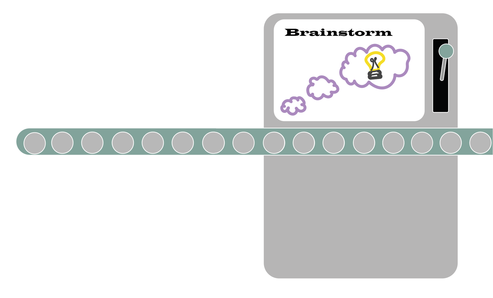
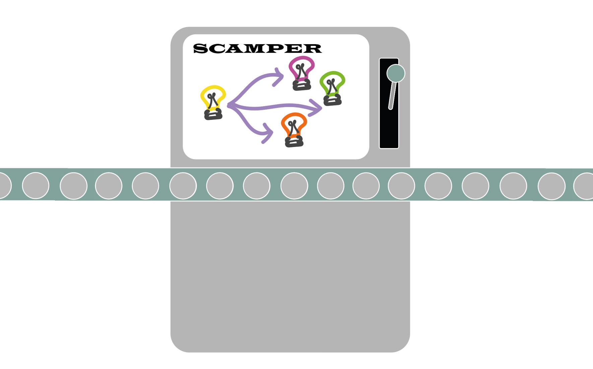
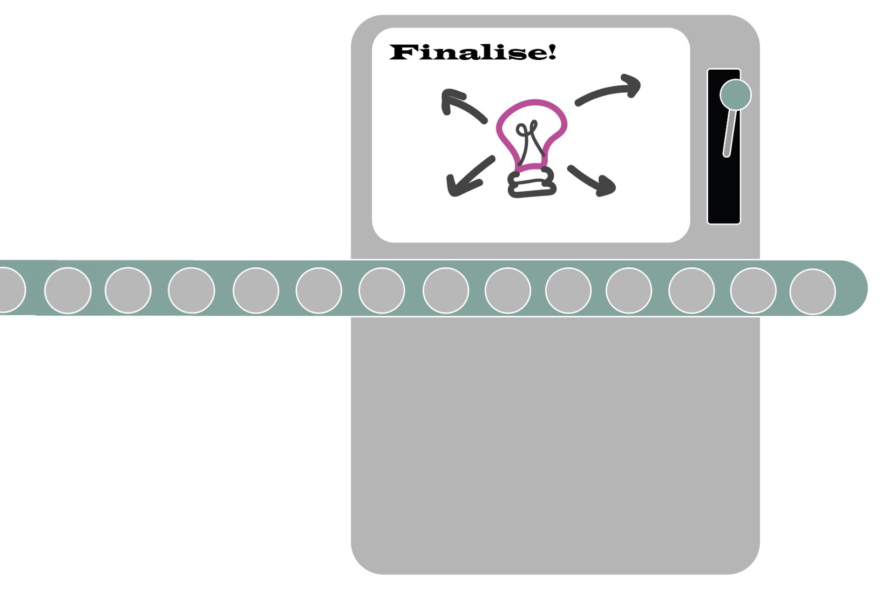

This idea machine will take your simple brainstorm ideas into creative and comprehensive ideas that can be shared with others. It does this through 3 big steps, which will be explained in depth below!
First, lets walk you through the navigation bar
In this first step, you will be brainstorming 2-3 brief ideas to get you started. We would recommend spending 10 minutes on this exercise
Next, pick an idea you like and would like to explore a bit further. This is the idea you will use to SCAMPER! SCAMPER is a technique used to
Finally, with your SCAMPER ideas...
